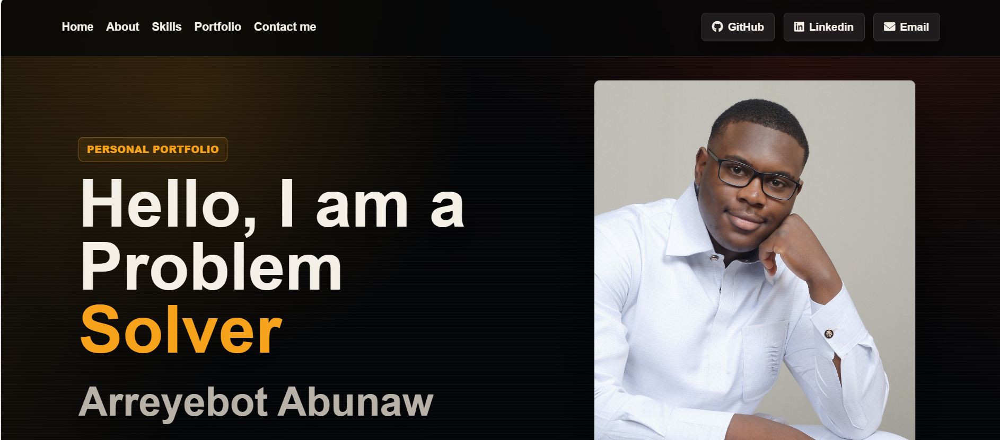

I use HTML5 to build clean, semantic pages with forms, media, accessibility, and logical document structure.
Skill
Expertise
I use Flexbox, Grid, transitions, and responsive design to create polished pages across screen sizes.
I use JavaScript to add interactivity, connect page behavior, and turn static ideas into usable project features.
I use Python to practice programming fundamentals, problem solving, and clean logic for future full-stack projects.
I use C++ to strengthen problem solving, data structures, and programming concepts through practice projects.
I use GitHub to organize projects, share my work, and improve my development workflow as my portfolio grows.
I keep growing through portfolio projects, design improvements, practice, and full-stack development work.
I enjoy breaking challenges into smaller steps and building solutions that are clear, useful, and easy to improve.
Projects

Web DevelopmentThis project focuses on building modern websites with clean page structure, responsive layouts, polished styling, and interactive features using HTML, CSS, and JavaScript. Click to go to Repo.
 Campus Shortcut Navigation
Campus Shortcut Navigation
A full-stack web application that routes students across the Missouri S&T campus using real student-worn shortcuts, not just official sidewalks. Built with React, Leaflet.js, Python FastAPI, and NetworkX, the app models campus paths as a graph and computes optimal routes via Dijkstra's algorithm.